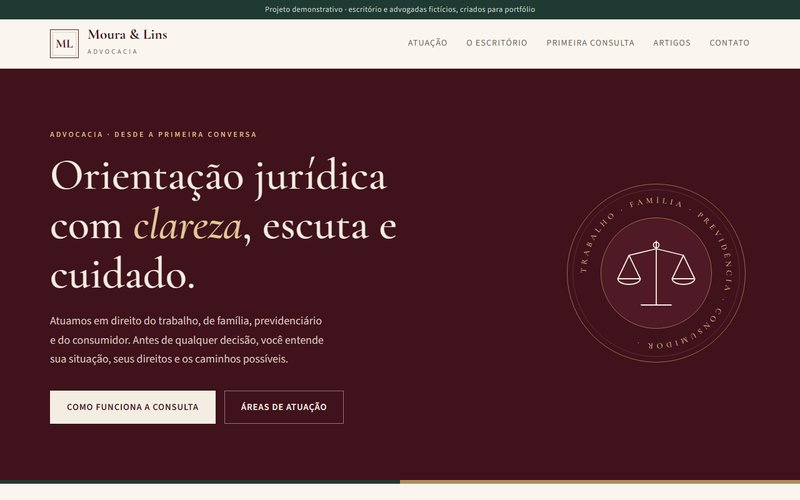

Sites de uma página para um escritório de contabilidade e um de advocacia. Mesmo cuidado técnico (SEO, dados estruturados, celular primeiro), linguagem e visual pensados para cada público.
Para MEI e pequenas empresas: serviços, troca de contador em 4 passos, dúvidas frequentes e contato por WhatsApp.
Ver site →
Visual sóbrio e clássico, tom informativo dentro das regras de publicidade da OAB: áreas, sócias, primeira consulta e artigos.
Ver site →